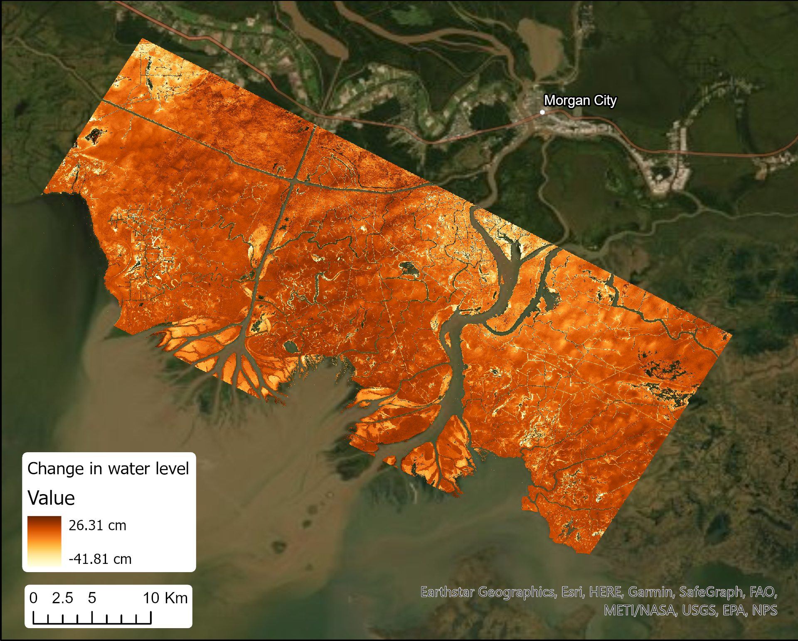
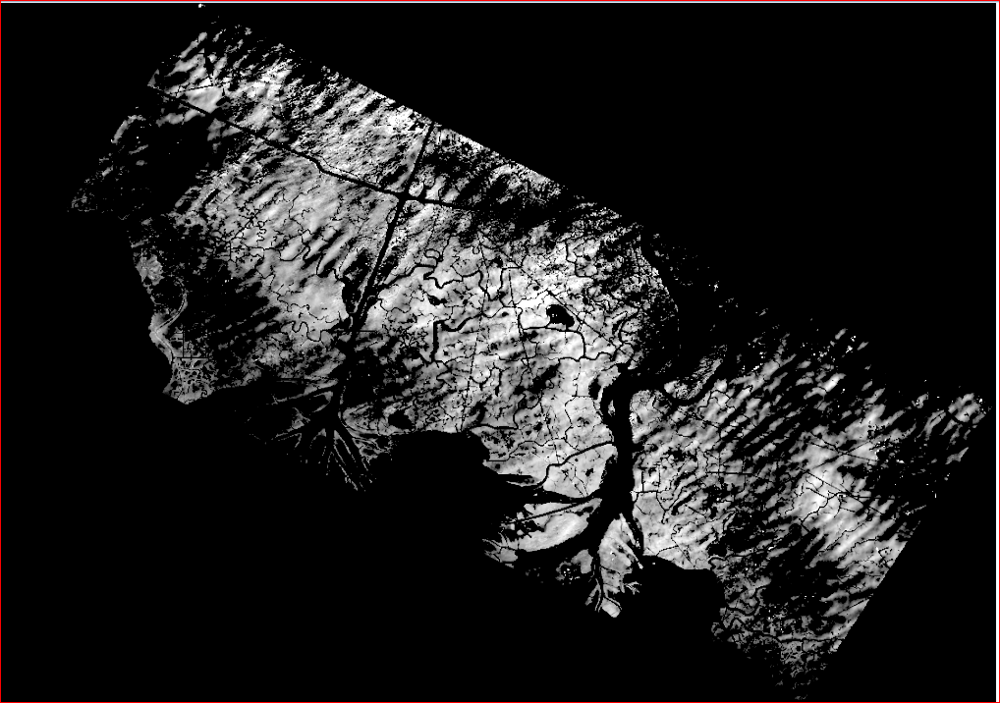
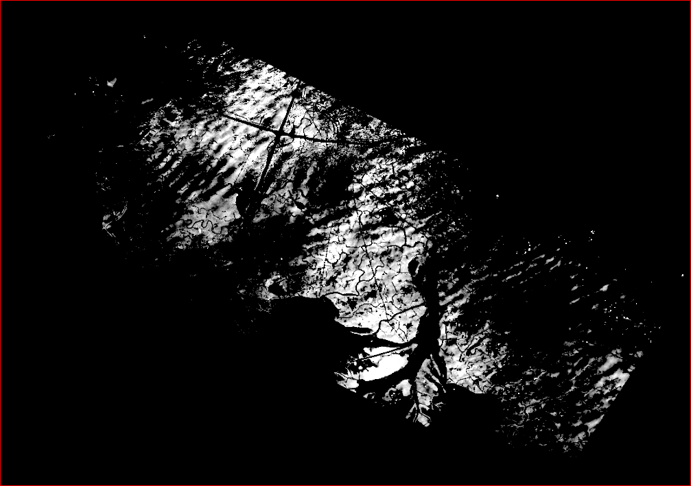
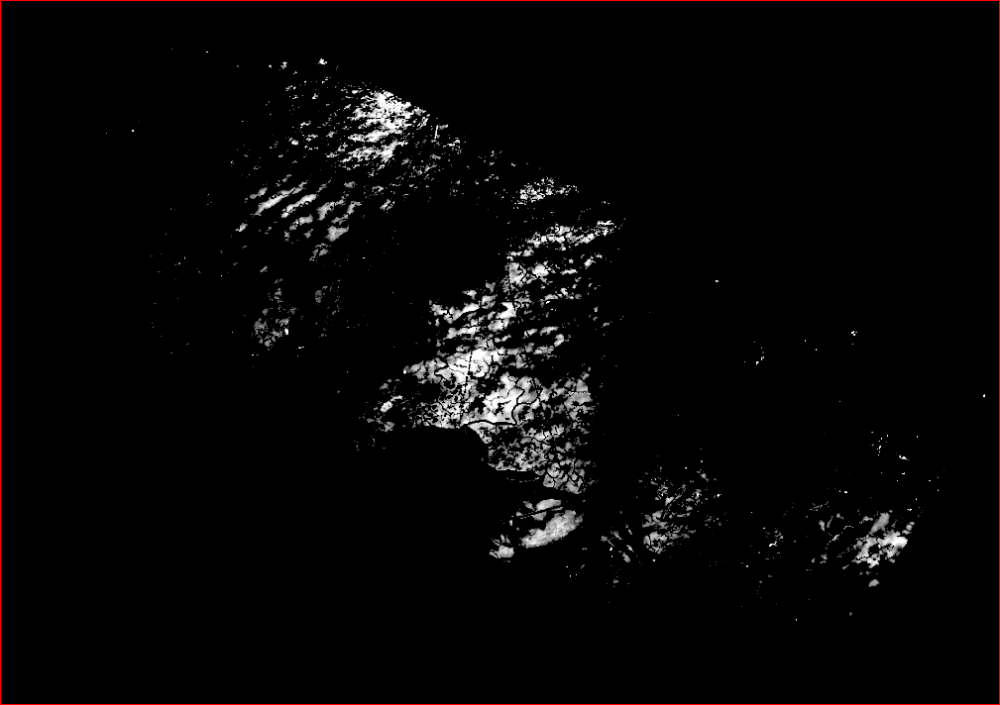
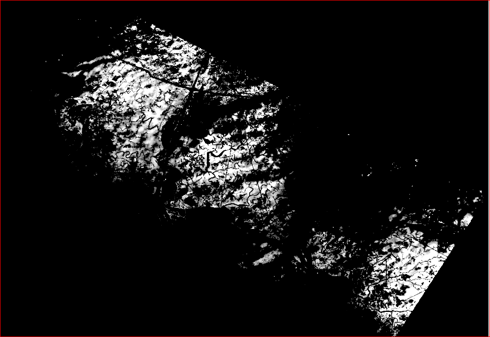
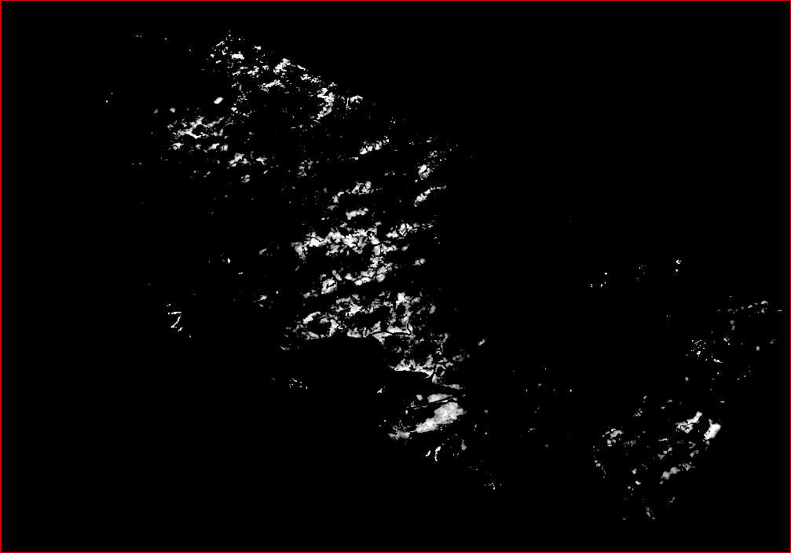

Delta-X
The Delta-X mission is a 5-year NASA mission to study the Mississippi River Delta in the United States, which is growing and sinking in different areas.
Water Level Value
The Map of water level changes based on water surface elevations measured by UAVSAR on October 16, 2016, at 14:08 and 16:37 UTC. This shows the data of 10km.
Landmass Density
These images shows the cumulative changes in water levels at 30-minute intervals over a 150-minute period on 2016-10-16 in the Atchafalaya Basin in Southern Louisiana, USA, within the Mississippi River Delta (MRD) floodplain.
The water surface changes after 30 min intervel shows the landmass decreased
The water surface changes after 60 min intervel
The water surface changes after 90 min intervel
The water surface changes after 120 min intervel
The water surface changes after 150 min intervel. Here the land surface is decreased too much before the 30 min intervel and the land masses decreased from different areas.
Turbidity, Water and Air Pressure, Temperature
During Fall 2021, turbidity sensors and co-located water pressure sensors were deployed at eight sites in Atchafalaya and Terrebonne Basins. The four Atchafalaya sites were all located at Mike Island in the Wax Lake Delta in island edge and island interior locations. The remaining four sites were in Terrebonne basin and were proximal to the Louisiana Coastwide Reference Monitoring System (CRMS) site 421. These stations were installed in different parts of the wetland expected to have different levels of hydrological connectivity.
Locations of turbidity sampling stations in Mississippi River Delta of coastal Louisiana during 2021.

Figure A gives information about the locations of Atchafalaya and Terrebonne stations within the delta.

Figure B contains the information about the sites around Mike Island in Wax Lake Delta in Atchafalaya basin.

Figure C contains the information about the Sites in the Terrebonne basin near CRMS site 421.